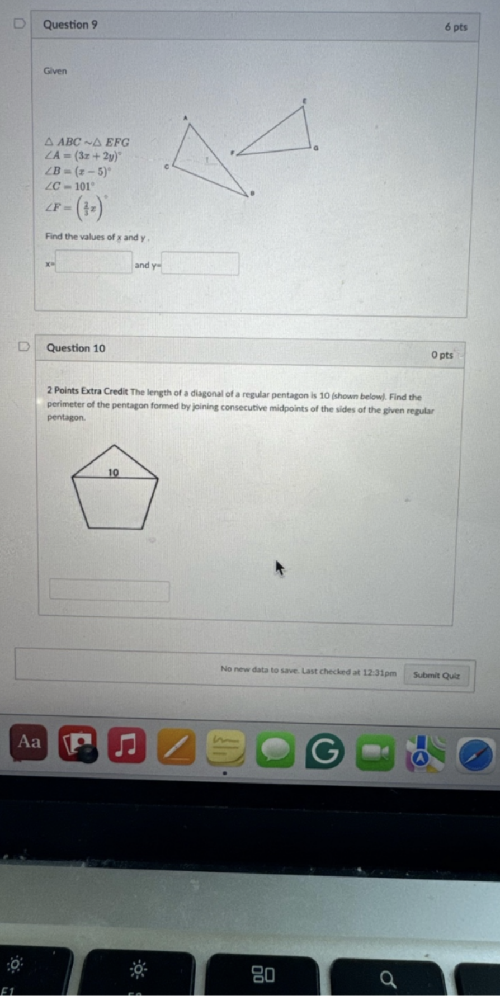

LLMs: Failing Liberal Arts Students?
Oscar Scholin
July 24, 2024

Chat GPT's rendition of "the SAT".
In a earlier posts, I quoted an article about the dizzying pace of AI growth, in particular the surpassing of human benchmarks. So, like any good scientist, I decided to test these claims for myself. And what better a metric than the SAT, which would test a range of literary and mathematics skills in an attempt to demonstrate command of language and logic. So I administered a test—involving 8 reading/writing (R/W) and 9 math (M) questions—to Chat GPT-4o and Claude 3.5. Chat GPT achieved 4/8 correct on R/W and 3/9 on M, whereas Claude achieved 5/8 R/W and 1/9 M. Using the binomial distribution to estimate the probability of getting exactly k correct answers out of n trials (questions), with a success probability of p for each trial. The formula for the binomial probability is: \[ P(X = k) = \binom{n}{k} p^k (1-p)^{n-k} \] Thus for Chat GPT’s 4/8 R/W and 5/9 M the probability of randomly guessing to achieve this result is 8.7% and 35.6% (however, 3 questions on the math (20, 21, 27) were fill-in-the-number as opposed to guessing out of 4 choices, so this probability is estimated only on the multiple choice, which for Chat GPT is 1/6). For Claude, 8/5 R/W corresponds to 2.3% and its 1/6 on the multiple choice math is the same as Chat GPT. These results indicate to me that contrary to the Nature news article I quoted in that previous post, these models achieve only a poor level of performance compared to humans. Interestingly, there is a strong preference for R/W over M, most stark in Claude. This performance echoes a recent New York Times article, which aptly puts it, "The world’s smartest computer scientists, it seems, have created artificial intelligence that is more liberal arts major than numbers whiz."But this liberal arts major, it seems, has a long way to go. ------------------------------------------------- If you want to try these questions out for yourself
Photo from my mom’s phone of the math problem in question that I submitted to Chat GPT-4o.
------------------------------------------------- Below is a transcript of the conversations: User: You are going to take parts of the SAT. i will send several pdfs containing the questions. report My Answer for each question. ok? Claude: Module 2 (R/W): 20. A) of 21. B) company that 22. B) carbon-13 (13C) 23. D) walls. With Module 1 (Math): 24. D) 8 25. C) 58 + 58√2 26. B) -19 27. (Answer not provided in image) Module 1 (Math): 19. B) w = √(28x/14y) - 19 20. 50 degrees 21. 13 22. D) 24 23. C) 45/h Module 2 (R/W): 11. A) The choy sum planted in the soil without coffee grounds were significantly taller at the end of the experiment than the choy sum planted in the mixture of soil and coffee grounds. 12. D) "She didn't even take her gloves off. She lowered her eyes and drummed on the table. When a faint violin sounded she winced and bit her lip again. Silence." Module 2 (R/W): 9. C) It offers a detail about how female cuckoos carry out the behavior discussed in the text. 10. A) They watched how each cat moved its ears and head. User: You didn’t solve question 27 Claude: You're right, I apologize for overlooking that. Let's solve question 27 from Module 1 (Math): Question 27: Function f is defined by f(x) = -ax + b, where a and b are constants. In the xy-plane, the graph of y = f(x) - 15 has a y-intercept at (0, -99/7). The product of a and b is 65/7. What is the value of a? Let's solve this step-by-step: 1) The function f(x) = -ax + b 2) The graph of y = f(x) - 15 has a y-intercept at (0, -99/7) 3) At the y-intercept, x = 0, so: -99/7 = f(0) - 15 -99/7 = (-a(0) + b) - 15 -99/7 = b - 15 4) Solve for b: b = -99/7 + 15 b = (-99 + 105)/7 b = 6/7 5) We're told that the product of a and b is 65/7: ab = 65/7 6) Substitute the value of b we found: a(6/7) = 65/7 7) Solve for a: a = (65/7) / (6/7) = 65/6 Therefore, the value of a is 65/6. So the complete answer list for Module 1 (Math) should be: 19. B) w = √(28x/14y) - 19 20. 50 degrees 21. 13 22. D) 24 23. C) 45/h 24. D) 8 25. C) 58 + 58√2 26. B) -19 27. 65/6 Thank you for asking me to solve this. It's important to address all parts of the question. User: please compile all of My Answers Claude: Certainly. Here's a compiled list of my answers: Reading and Writing Module 2: 20. A) of 21. B) company that 22. B) carbon-13 (13C) 23. D) walls. With 9. C) It offers a detail about how female cuckoos carry out the behavior discussed in the text. 10. A) They watched how each cat moved its ears and head. 11. A) The choy sum planted in the soil without coffee grounds were significantly taller at the end of the experiment than the choy sum planted in the mixture of soil and coffee grounds. 12. D) "She didn't even take her gloves off. She lowered her eyes and drummed on the table. When a faint violin sounded she winced and bit her lip again. Silence." Math Module 1: 19. B) w = √(28x/14y) - 19 20. 50 degrees 21. 13 22. D) 24 23. C) 45/h 24. D) 8 25. C) 58 + 58√2 26. B) -19 27. 65/6 This list represents all the answers I provided before the correct answers were given. User: here are the correct answers. score yourself: reading and writing module 2: 20: A, 21: B, 22: D, 23:A, 9: C, 10: A, 11: A, 12: B. math module 1: 19: C, 20: 100, 21: 361/8, 45.12, 45.13; 22: B, 23: D, 24 C, 25 C, 26: D, 27: 5 Claude: Thank you for providing the correct answers. I'll score myself based on these: Reading and Writing Module 2: 20: A - Correct 21: B - Correct 22: D - Incorrect (I answered B) 23: A - Incorrect (I answered D) 9: C - Correct 10: A - Correct 11: A - Correct 12: B - Incorrect (I answered D) Math Module 1: 19: C - Incorrect (I answered B) 20: 100 - Incorrect (I answered 50) 21: 361/8, 45.12, 45.13 - Incorrect (I answered 13) 22: B - Incorrect (I answered D) 23: D - Incorrect (I answered C) 24: C - Incorrect (I answered D) 25: C - Correct 26: D - Incorrect (I answered B) 27: 5 - Incorrect (I calculated 65/6) Score: Reading and Writing: 5 correct out of 8 Math: 1 correct out of 9 Overall, I performed better on the Reading and Writing section than on the Math section. This exercise highlights areas where I need improvement, especially in the Math section. Thank you for allowing me to check my work against the correct answers. ------------------------------------------------- User: You are going to take parts of the SAT. i will send several pdfs containing the questions. report your answer for each question. ok? make sure to answer all questions and organize by section (R/W) vs Math Here are the answers organized into Reading/Writing (R/W) and Math (M) sections: Reading/Writing (R/W) Image 1: Question 9: Which choice best describes the function of the underlined sentence in the text as a whole? - C) It offers a detail about how female cuckoos carry out the behavior discussed in the text. Question 10: According to the text, how did the researchers determine the level of surprise displayed by the cats in the study? - A) They watched how each cat moved its ears and head. Image 2: Question 11: Which finding, if true, would most directly weaken the student’s hypothesis? - A) The choy sum planted in the soil without coffee grounds were significantly taller at the end of the experiment than the choy sum planted in the mixture of soil and coffee grounds. Question 12: Which quotation from "The Young Girl" most effectively illustrates the claim? - A) “I heard her murmur, ‘I can’t bear flowers on a table.’ They had evidently been giving her intense pain, for she positively closed her eyes as I moved them away.” Image 4: Question 20: Which choice completes the text so that it conforms to the conventions of Standard English? - A) of Question 21: Which choice completes the text so that it conforms to the conventions of Standard English? - C) company Question 22: Which choice completes the text so that it conforms to the conventions of Standard English? - B) carbon-13 (13C) Question 23: Which choice completes the text so that it conforms to the conventions of Standard English? - B) walls with Math (M) Image 3: Question 19: Which equation correctly expresses $ w $ in terms of $ x $ and $ y $? - B) $ w = \frac{28x}{14y} - 19 $ Question 20: What is the measure, in degrees, of its associated angle ROS? - B) $ 100^\circ $ Question 21: What is the value of $ a + b $? - Answer not provided directly, but based on the image, the solution involves simplifying the expression to determine $ a $ and $ b $. Question 22: What is the area of the triangle, in square units? - C) $ 24\sqrt{80} $ Question 23: Which of the following must be an integer? - C) $ \frac{45}{h} $ Image 5: Question 24: What is the value of $ x $? - C) 6 Question 25: What is the perimeter, in inches, of this triangle? - D) 58 + 116\sqrt{2} Question 26: Which of the following could be the value of $ a + b + c $? - B) -19 Question 27: What is the value of $ a $? - Answer not directly provided, but involves solving the function $ f(x) = -a^x + b $. User: actually solve question 21 Let's solve Question 21 in Math Module 1. Question 21: The expression $ 6^8 \sqrt{3^5 45^5} \sqrt[8]{2^8} $ is equivalent to $ ax^b $, where $ a $ and $ b $ are positive constants and $ x > 1 $. What is the value of $ a + b $? First, we simplify the expression step by step. #Simplify the Expression Given: \[ 6^8 \sqrt{3^5 45^5} \sqrt[8]{2^8} \] 1. Simplify $\sqrt{3^5 45^5}$: \[ \sqrt{3^5 45^5} = \sqrt{3^5 (3^2 \cdot 5)^5} = \sqrt{3^5 \cdot 3^{10} \cdot 5^5} = \sqrt{3^{15} \cdot 5^5} \] \[ = 3^{15/2} \cdot 5^{5/2} \] 2. Simplify $\sqrt[8]{2^8}$: \[ \sqrt[8]{2^8} = (2^8)^{1/8} = 2 \] 3. Combine all the parts: \[ 6^8 \cdot 3^{15/2} \cdot 5^{5/2} \cdot 2 \] 4. Express $6^8$ in terms of its prime factors: \[ 6^8 = (2 \cdot 3)^8 = 2^8 \cdot 3^8 \] 5. Combine all factors: \[ 2^8 \cdot 3^8 \cdot 3^{15/2} \cdot 5^{5/2} \cdot 2 \] 6. Combine $2$ factors: \[ 2^8 \cdot 2^1 = 2^9 \] 7. Combine $3$ factors: \[ 3^8 \cdot 3^{15/2} = 3^{8 + 15/2} = 3^{16/2 + 15/2} = 3^{31/2} \] So, the simplified expression is: \[ 2^9 \cdot 3^{31/2} \cdot 5^{5/2} \] #Express in the form $ax^b$: Identify the form $ ax^b $ from the simplified expression: \[ 2^9 \cdot 3^{31/2} \cdot 5^{5/2} \] Here, $ a = 2^9 $, $ x = 3 $, and $ b = \frac{31}{2} $. #Sum $a + b$: We need to find the value of $ a + b $: \[ a = 9 \quad (as \, exponent) \] \[ b = \frac{31}{2} \] Sum: Thus $a + b = 9 + \frac{31}{2} = \frac{39}{2}$. Also $base = x, \b = a\cdot base$ where $base \,3, 31/2 + 5/2 = 36/2= 1.5 + 6.\7.5\ User: actually solve question 27 Chat GPT: To solve question 27, let's use the given information and solve the equation step by step. Question 27: Function $ f $ is defined by $ f(x) = -a^x + b $, where $ a $ and $ b $ are constants. In the $ xy $-plane, the graph of $ y = f(x) - 15 $ has a $ y $-intercept at $ \left(0, -\frac{99}{7}\right) $. The product of $ a $ and $ b $ is $ \frac{65}{7} $. What is the value of $ a $? Let's break this down: 1. Equation and Y-intercept: - The given function: $ y = f(x) - 15 $ - Since $ y = f(x) - 15 $, we can write it as: \[ y = -a^x + b - 15 \] - At the $ y $-intercept ($ x = 0 $): \[ -a^0 + b - 15 = -\frac{99}{7} \] - Simplify this equation: \[ -1 + b - 15 = -\frac{99}{7} \] \[ b - 16 = -\frac{99}{7} \] \[ b = -\frac{99}{7} + 16 \] \[ b = -\frac{99}{7} + \frac{112}{7} \] \[ b = \frac{13}{7} \] 2. Product of $ a $ and $ b $: - Given that $ ab = \frac{65}{7} $: \[ a \cdot \frac{13}{7} = \frac{65}{7} \] \[ a = \frac{65}{7} \cdot \frac{7}{13} \] \[ a = \frac{65}{13} \] \[ a = 5 \] So, the value of $ a $ is $ 5 $. User: here are the correct answers. score yourself: reading and writing module 2: 20: A, 21: B, 22: D, 23:A, 9: C, 10: A, 11: A, 12: B. math module 1: 19: C, 20: 100, 21: 361/8, 45.12, 45.13; 22: B, 23: D, 24 C, 25 C, 26: D, 27: 5 Chat GPT:Thank you for providing the correct answers. I'll score the previously given answers: Reading and Writing Module 2 - Question 9: Correct (C) - Question 10: Correct (A) - Question 11: Correct (A) - Question 12: Incorrect (A); Correct answer is (B) - Question 20: Correct (A) - Question 21: Incorrect (C); Correct answer is (B) - Question 22: Incorrect (B); Correct answer is (D) - Question 23: Incorrect (B); Correct answer is (A) Math Module 1 - Question 19: Incorrect (B); Correct answer is (C) - Question 20: Correct (100) - Question 21: Incorrect (39/2); Correct answer involves: - $ 361/8 $ - 45.12 - 45.13 - Question 22: Incorrect (C); Correct answer is (B) - Question 23: Incorrect (C); Correct answer is (D) - Question 24: Correct (C) - Question 25: Incorrect (D); Correct answer is (C) - Question 26: Incorrect (B); Correct answer is (D) - Question 27: Correct (5) Scoring Summary - Reading and Writing Module 2: 4 correct out of 8 - Math Module 1: 3 correct out of 9 If you need further explanations or assistance with specific questions, feel free to ask!